10.2 Example: Locating Warehouses
This example features branch and bound to compute an optimal solution, a non-trivial distribution strategy and symbolic constraints.
Problem Specification
Assume a company which wants to construct warehouses to supply stores with goods. Each warehouse to be constructed would have a certain capacity defining the largest number of stores which can be supplied by this warehouse. For the construction of a warehouse we have fixed costs. The costs for transportation from a warehouse to a store vary depending on the location of the warehouse and the supplied store. The aim is to determine which warehouses should be constructed and which stores should be supplied by the constructed warehouses such that the overall costs are minimized.
We assume the fixed costs of building a warehouse to be 50. We furthermore assume 5 warehouses W1 through W5 and 10 stores Store1 through Store10. The capacities of the warehouses are shown in Figure 10.2. The costs to supply a store by a warehouse are shown in Figure 10.3.


|
|
|
|
| |
| 36 | 42 | 22 | 44 | 52 |
| 49 | 47 | 134 | 135 | 121 |
| 121 | 158 | 117 | 156 | 115 |
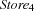 | 8 | 91 | 120 | 113 | 101 |
| 77 | 156 | 98 | 135 | 11 |
| 71 | 39 | 50 | 110 | 98 |
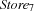 | 6 | 12 | 120 | 98 | 93 |
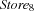 | 20 | 120 | 25 | 72 | 156 |
| 151 | 60 | 104 | 139 | 77 |
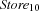 | 79 | 107 | 91 | 117 | 154 |


Figure 10.3: Costs for supplying stores.
Model
We assume that the costs are given in the matrix defined by Figure 10.3. For the model of this problem we introduce the following variables.
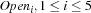, with domain
 such that
such that  if warehouse
if warehouse  does supply at least one store.
does supply at least one store. 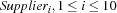, with domain
 such that
such that  if store
if store  is supplied by warehouse 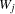.
is supplied by warehouse 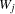. , such that the domain of
 is defined by the row
is defined by the row  . The variable denotes the costs of supplying store
. The variable denotes the costs of supplying store  by warehouse 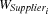, i. e., 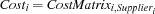.
by warehouse 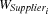, i. e., 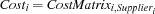.
We have the additional constraint that the capacity of the warehouses must not be exceeded. To this aim we introduce auxiliary variables  with the domain as follows.
with the domain as follows.
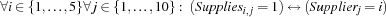
The capacity constraints can then be stated with
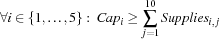
where  is defined according to Figure 10.2.
is defined according to Figure 10.2.
Distribution Strategy
There are several possibilities to define a distribution strategy for this problem.
least regret
We choose to determine the variables  by distribution. Because no entry in a row of the cost matrix occurs twice, we immediately know which store is supplied by which warehouse. We select the variable first for which the difference between the smallest possible value and the next higher value is maximal. Thus, decisions are made early in the search tree where the difference between two costs by different suppliers are maximal. The distribution strategy will try the minimal value in the domain of first. In Operations Research this strategy is known as the principle of least regret.
by distribution. Because no entry in a row of the cost matrix occurs twice, we immediately know which store is supplied by which warehouse. We select the variable first for which the difference between the smallest possible value and the next higher value is maximal. Thus, decisions are made early in the search tree where the difference between two costs by different suppliers are maximal. The distribution strategy will try the minimal value in the domain of first. In Operations Research this strategy is known as the principle of least regret.
Script
The script in Figure 10.4 constrains its root variable to a record containing the supplying warehouse for each store, the costs for each store to be supplied by the corresponding warehouse and the total costs.
The statement
{FD.element Supplier.St CostMatrix.St Cost.St}connects the costs to supply a store with the supplier. Because no element in a row of the cost matrix occurs twice, the supplier for a store is known if its costs are determined and vice versa. Through this statement the constraint is imposed.
A propagator for the constraint that the capacity of a warehouse is not exceeded can be created by the statement
{FD.atMost Capacity.S Supplier S}
The statement
Open.S = {FD.reified.sum {Map Stores fun {$ St}
Supplier.St =: S end} '>:' 0} guarantees that a variable 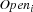 in the model is constrained to 1 if warehouse supplies at least one store.
The first solution of the problem can be found with the statement
{ExploreOne WareHouse}
To compute the solution with minimal costs we define the following ordering relation.
proc {Order Old New}
Old.totalCost >: New.totalCost
end
The optimal solution with total cost 604 can now be computed with
{ExploreBest WareHouse Order}
Capacity = supplier(3 1 4 1 4)
CostMatrix = store(supplier(36 42 22 44 52)
supplier(49 47 134 135 121)
supplier(121 158 117 156 115)
supplier(8 91 120 113 101)
supplier(77 156 98 135 11)
supplier(71 39 50 110 98)
supplier(6 12 120 98 93)
supplier(20 120 25 72 156)
supplier(151 60 104 139 77)
supplier(79 107 91 117 154))
BuildingCost = 50
fun {Regret X}
M = {FD.reflect.min X}
in
{FD.reflect.nextLarger X M} - M
end
proc {WareHouse X}
NbSuppliers = {Width Capacity}
NbStores = {Width CostMatrix}
Stores = {List.number 1 NbStores 1}
Supplier = {FD.tuple store NbStores 1#NbSuppliers}
Open = {FD.tuple supplier NbSuppliers 0#1}
Cost = {FD.tuple store NbStores 0#FD.sup}
SumCost = {FD.decl} = {FD.sum Cost '=:'}
NbOpen = {FD.decl} = {FD.sum Open '=:'}
TotalCost = {FD.decl}
in
X = plan(supplier:Supplier cost:Cost totalCost:TotalCost)
TotalCost =: SumCost + NbOpen*BuildingCost
{For 1 NbStores 1
proc {$ St}
Cost.St :: {Record.toList CostMatrix.St}
{FD.element Supplier.St CostMatrix.St Cost.St}
end}
{For 1 NbSuppliers 1
proc {$ S}
{FD.atMost Capacity.S Supplier S}
Open.S = {FD.reified.sum {Map Stores fun {$ St}
Supplier.St =: S
end} '>:' 0}
end}
{FD.distribute
generic(order: fun {$ X Y} {Regret X} > {Regret Y} end)
Cost}
end
Figure 10.4: A script for the warehouse problem.